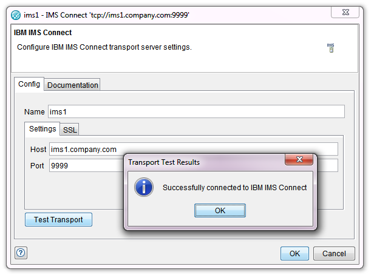
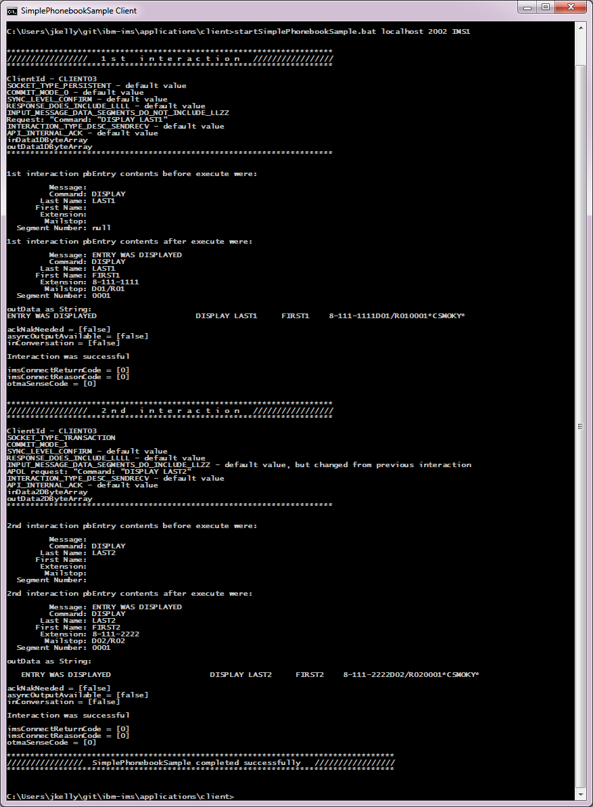

ibm-ims
Example of how Rational Integration Tester can be used to trace and test IMS resources.
Several Java IMS Connect sample applications. These are functionally identical to the samples shipped as part of IMS Enterprise Suite Connect APIs for Java other than the host & port can be specified on the command line.
-
A RIT project which contains
- A test suite to run the IVTNO transaction
- A stub which simulates the IVTNO transaction
- COBOL copybooks defining the input and output structure on the IVTNO messages.
- Monitor definitions for the relevant operations.
Post download instructions
After download of the project, the folder structure for the ibm-ims is:
ibm-ims
rit-projects
rit-project-ibm-ims.zip
applications
client
IMSESConnectAPIJava
startSimplePhonebookSample.bat
- Unzip rit-projects/rit-project-ibm-ims.zip. This contains a RIT project ibm-ims.ghp
- Download the required IMS Enterprise Suite Connect APIs for Java libraries
from www.ibm.com/software/data/ims/connect/ and
unzip into the ibm-ims/applications/client/IMSESConnectAPIJava folder.
Configuring the RIT project to match your IMS environment
The RIT project's Production environment has been configured to an IMS system on ims1.company.com:9999. You need to modify the project settings to refer to your own IMS system.
- Start RIT.
- Select Open, then navigate to the ibm-ims/ibm-ims.ghp file.
- Go to "Architecture School" (F9).
- Select "Physical View" tab
- Open ims1
- Change hostname and port to match your IMS server settings
- Verify connection by using the "Test Transport" button, then select OK
- Select OK to save changes.

Running the sample Simple phonebook application
- Open a command prompt.
- Change directory to ibm-ims/applications/client.
- Run startSimplePhonebookSample.bat hostname port datastorename.

A trace log SimplePhonebookSampleTrace.log is created by IMS Connect
Intercepting the sample phonebook application flows
-
Modify the HTTP/TCP proxy service configuration file httptcp/registration.xml by adding the following line:
<forward bind="localhost:2002" destination="hostname:port" type="ims" />
Stop, re-start the HTTP/TCP proxy service. Now, IMS traffic directed to localhost:2002 will be directed to hostname:port
-
Re-run application, redirecting traffic through the intercept
startSimplePhonebookSample.bat localhost 2002 datastorename.

Recording the sample phonebook application
- Start RIT.
- Select Open, then navigate to the ibm-ims/ibm-ims.ghp file.
- Go to "Recording Studio" (F9).
- In the Events Monitors window import monitors from file monitors.rsh.
- Select Record.
- Open a command prompt.
- Change directory to ibm-ims/applications/client.
-
Re-run application, redirecting traffic through the intercept
startSimplePhonebookSample.bat localhost 2002 datastorename.
Using the application will results in operations being shown in the Events View window of RIT.